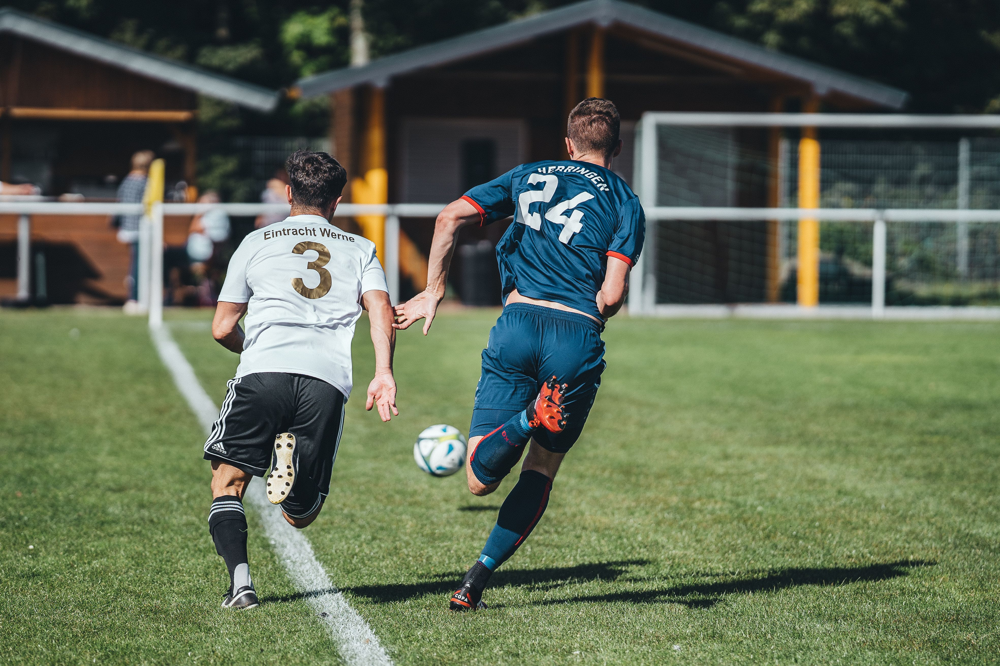
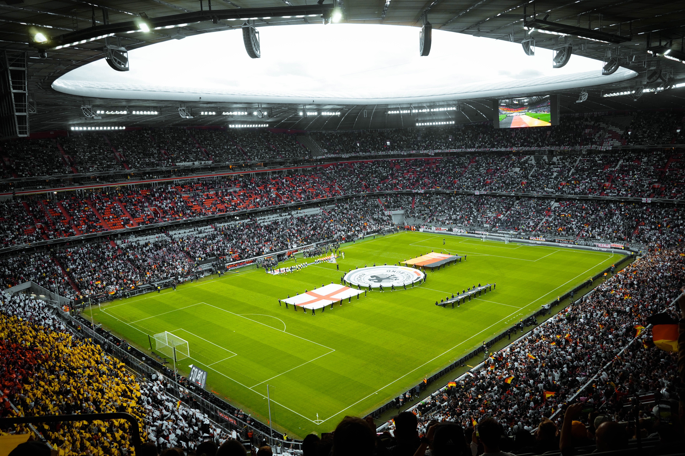
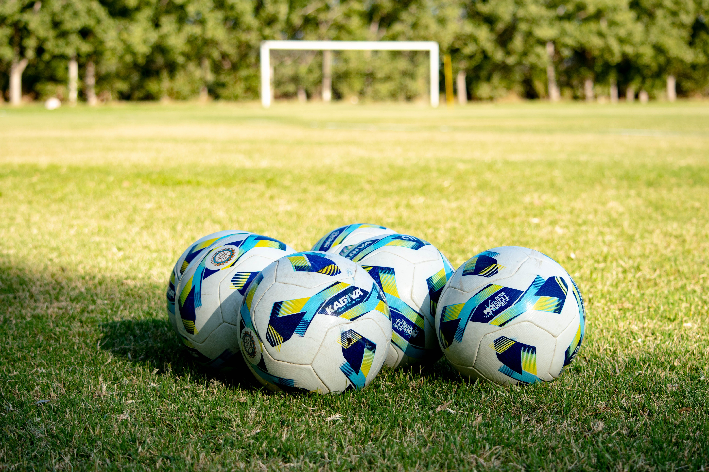

O que é futebol?
O futebol é um esporte praticado por duas equipes. O objetivo é marcar gols e vencer a partida.
É um esporte que exige trabalho em equipe e desperta uma grande paixão nos torcedores.

Regras básicas
O futebol possui algumas regras que organizam as partidas.
Principais regras
- Cada equipe começa com 11 jogadores.
- A partida possui dois tempos de 45 minutos.
- O goleiro pode usar as mãos dentro da própria área.
- Vence quem marcar mais gols.
Como funciona uma partida?
- O árbitro inicia o jogo.
- Os jogadores tentam marcar gols.
- O árbitro encerra a partida.
- O time com mais gols vence.
Competições
Existem várias competições importantes no futebol.
- Copa do Mundo
- Disputada por seleções de vários países.
- Campeonato Brasileiro
- Libertadores
- Champions League


Participe!
Gosta de futebol? Faça seu cadastro para participar da nossa escolinha fictícia.
Ir para o cadastro